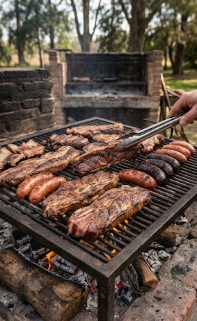
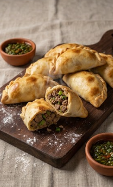
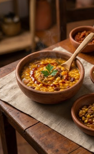

Sabores del Sur: El Arte Culinario de la Argentina
La gastronomía argentina es mucho más que buena comida; es un ritual de encuentro, una celebración de la
hospitalidad y el reflejo de una historia multicultural. Desde los aromas de las brasas hasta la
influencia de las tradiciones criollas y europeas, cada plato cuenta una historia única.
Tradiciones en la Mesa: Esenciales de la Cocina Argentina
-El Ritual del Asado: Más allá de una técnica de cocción, es el gran evento social por excelencia.
Cortes emblemáticos como el bife de chorizo, el ojo de bife y el asado de tira se cocinan lentamente
a las brasas, acompañados siempre por el clásico chimichurri o salsa criolla.
-Empanadas y Sabores Regionales: Un clásico federal que cambia de receta según cada provincia —con
carnes cortadas a cuchillo, papa, aceitunas o cebolla de verdeo—, representando el orgullo de la
cocina casera y artesanal del país.
-El Dulce de Leche y la Pastelería: El indiscutido rey de la repostería nacional, alma de los
tradicionales alfajores, facturas y preparaciones caseras que endulzan cada tarde junto a las
queridas tortas fritas.
-La Compañía del Mate: El infaltable de todos los días. Esta infusión de yerba mate, compartida en
ronda, es el símbolo definitivo de la amistad, la charla y la identidad cultural argentina.
Comidas Tipicas de la Argentina
Asado Argentino

Asado tradicional cocinado a las brasas de leña.
El asado es mucho más que un plato emblemático en Argentina; es un ritual social que reúne a
familiares y amigos alrededor del fuego. Consiste en diversos cortes de carne vacuno —como tira de
asado, vacío y entraña— cocinados lentamente a las brasas de carbón o leña, acompañados
habitualmente por achuras (chorizo, morcilla, mollejas) y la infaltable salsa chimichurri
Empanadas Tucumanas

Empanadas tucumanas tradicionales horneadas a la perfección.
Las empanadas son un pilar de la gastronomía regional argentina, teniendo cada provincia su receta
característica. La empanada tucumana destaca por su relleno jugoso de matambre de res cortado a
cuchillo, sazonado con comino y pimentón, mezclado con huevo duro y cebolla de verdeo, todo envuelto
en una masa casera horneada a alta temperatura
Locro Criollo

Cazuela de locro criollo, clásico plato para las fechas patrias
El locro es un espeso guisado de origen prehispánico que se consume tradicionalmente durante las
celebraciones patrias argentinas. Su base se compone de maíz blanco, porotos, zapallo cabutia y
carnes como falda, pechito de cerdo y chorizo colorado. Se sirve bien caliente, frecuentemente
acompañado por la "quiquirimichi", una salsa a base de aceite, pimentón y ají molido